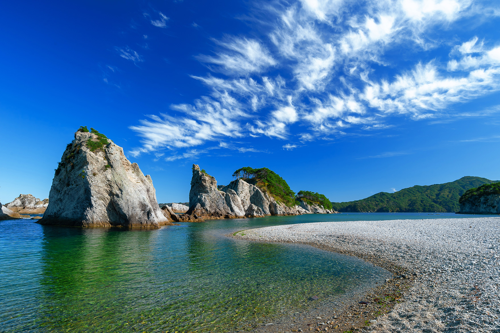
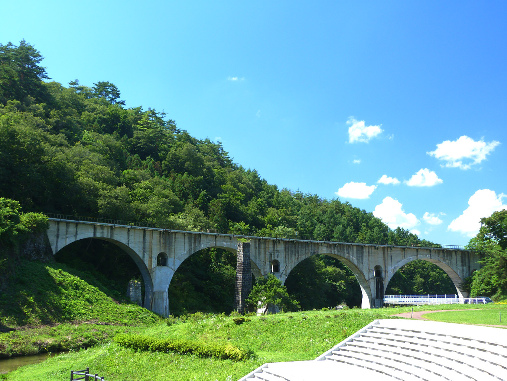
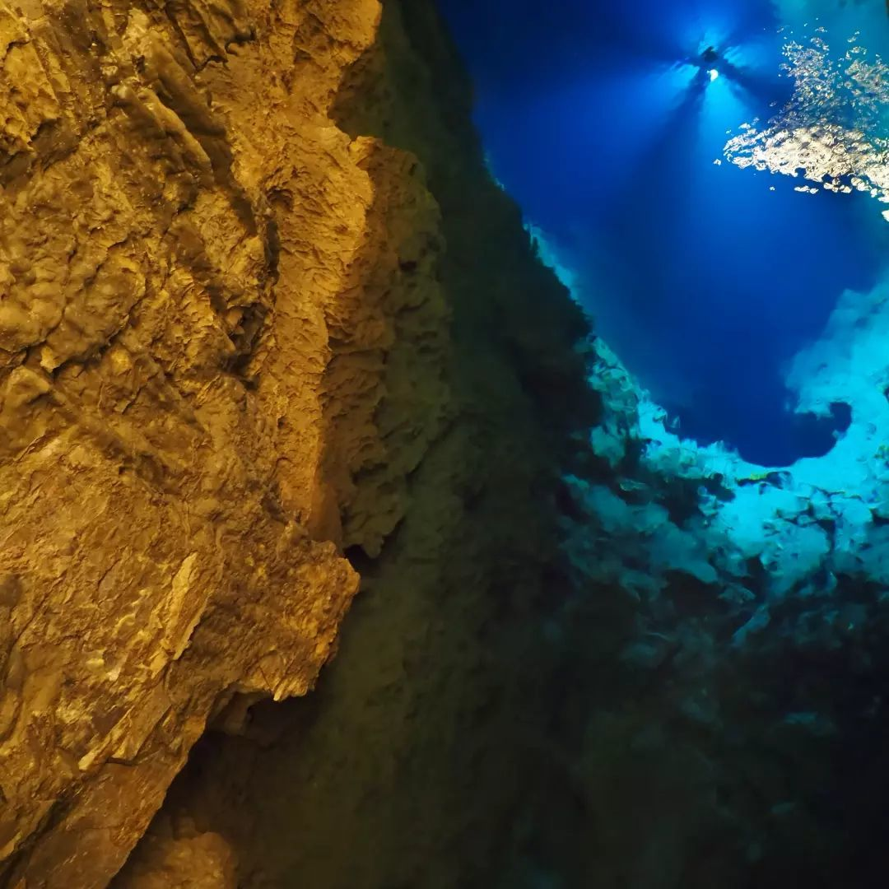

浄土ヶ浜陸中海岸を代表する景勝地。白い流紋岩でできた美しい海岸。磯遊び、海水浴客で賑わう。日本の快水浴場百選の『海の部特選』に選定された。 浄土ヶ浜の地名は天保年間（1681～1683）に宮古山常安寺七世の霊鏡和尚が「さながら極楽浄土のごとし」と感嘆したことから名づけられました。 |
 |
めがね橋正式名称は「宮守川橋梁」。宮沢賢治の名作「銀河鉄道の夜」のモチーフにもなったと言われ、ライトアップされた姿は見る人を幻想的な世界へと誘う。 |
 |
龍泉洞「龍泉洞」は、岩手県岩泉町にある日本三大鍾乳洞の1つにも数えられている鍾乳洞です。洞内は判明しているだけでも3,600m、総延長は5,000m以上に及ぶとされ、現在も調査が続いています。中でも「日本名水百選」に選ばれている地底湖の水は息を呑む程美しく、底から輝く青色は「ドラゴンブルー」と呼ばれ、多くの観光客を魅了しています。また、洞内にある一口飲むと3年長生きするという言い伝えで知られる水、「長寿の泉」も人気スポットです。 |
 |